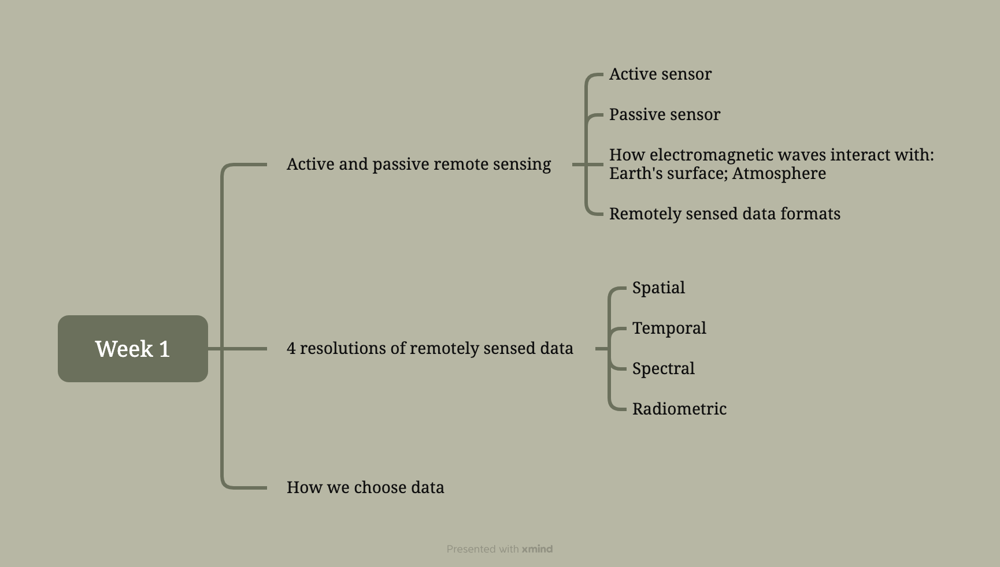
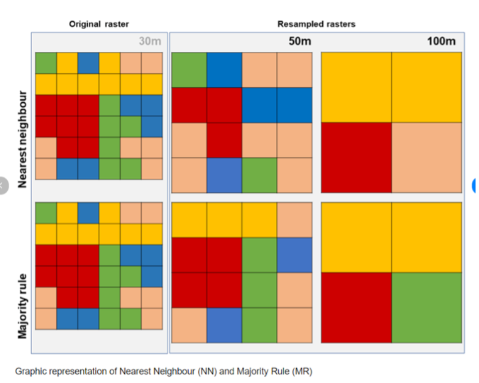
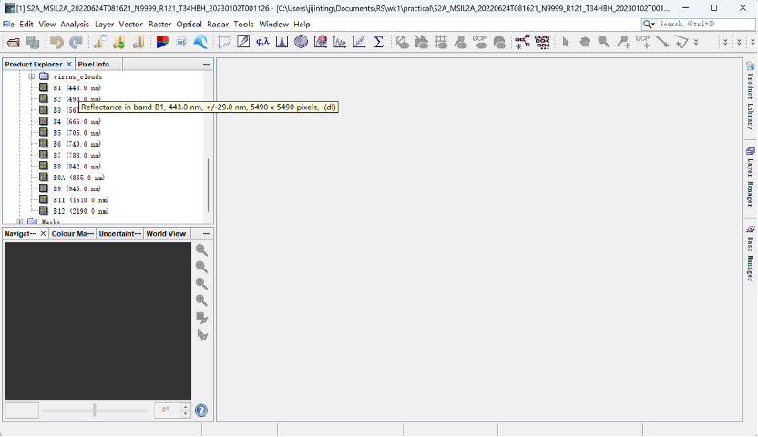
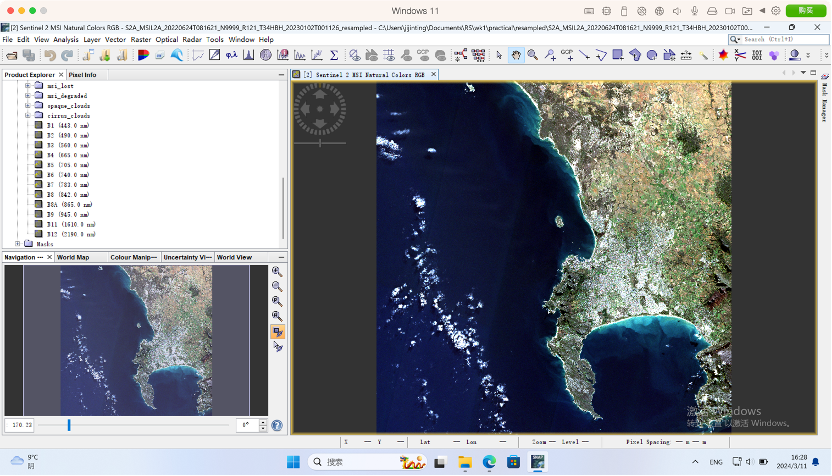
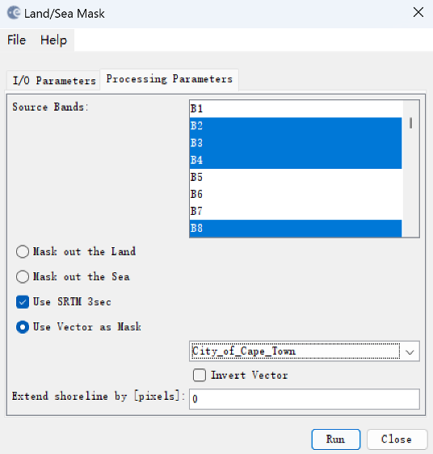
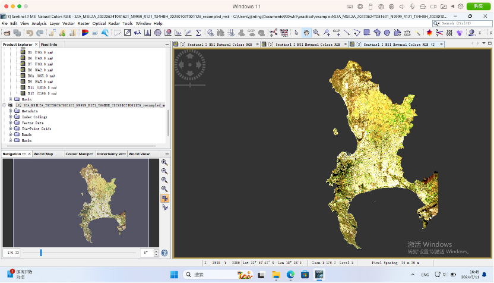
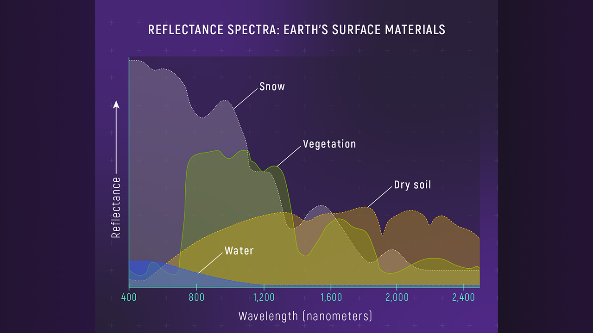
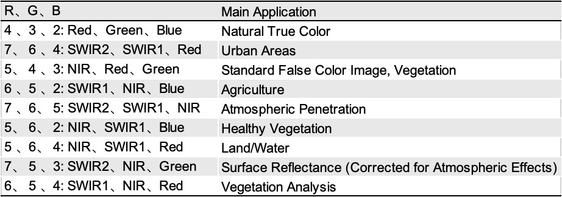
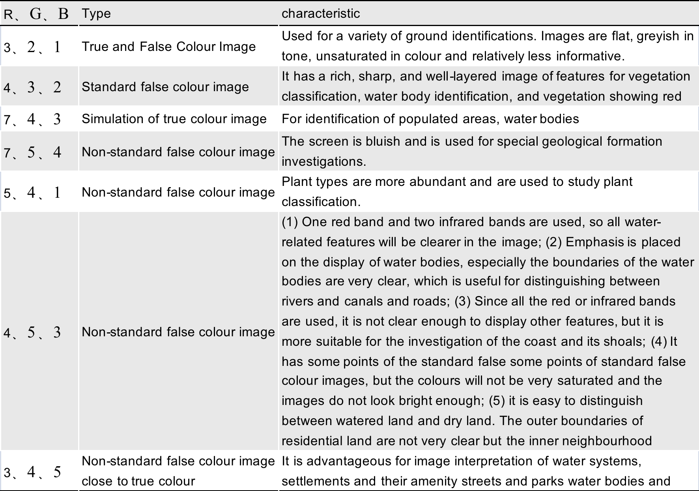

1 Week 1 - An Introduction to Remotely Sensing
1.1 1.1 Summary
I have organised the framework for the content of this week’s summary in the form of a mind map, and the following summary will cover these aspects:

The mind map of the outline for week 1’s summary
1.1.1 1.1.1 Active and passive remote sensing
Active and passive sensor:
Both active and passive sensors receive information from a distance, but the former receives electromagnetic waves, etc., which are actively emitted by themselves, while the latter do not emit themselves.
How electromagnetic waves interact with Earth’s surface and Atmosphere:
Electromagnetic radiation (EMR) is one of the two main sources such as sensor reception.
How electromagnetic waves interact with Earth’s surface:
Electromagnetic waves, upon reaching the Earth’s surface, undergo various changes including absorption, reflection, and transmission based on the surface’s properties. Dark surfaces absorb more light, whereas light surfaces reflect more. The interaction is also described by the Bidirectional Reflectance Distribution Function (BRDF), which accounts for how light is reflected based on surface characteristics and the angles of incoming and observed light.
How electromagnetic waves interact with the atmosphere:
Clouds are important factors affecting the quality of satellite images due to the interaction of electromagnetic waves with the atmosphere.
As electromagnetic waves traverse the Earth’s atmosphere, they are scattered by particles and gases, affecting the clarity of remotely sensed data. The scattering varies with the particle size relative to the wavelength of light, including Rayleigh, Mie, and non-selective scattering. The atmosphere also absorbs certain wavelengths, which can limit the light that reaches the surface and is reflected back.
In addition, although Satellite (and aerial) sensors are affected by the atmopsheric scattering, they can be corrected for by atmospheric correction (next week’s content).
Remotely sensed data formats:
Raster data, depending on the sensor (GeoTIFF (most common), others: BIL, BSQ, BIP, etc.)).
1.1.2 1.1.2 4 resolutions of remotely sensed data
Spatial and temporal resolution:
Spatial resolution is the size of the actual area represented by each pixel grid. Temporal resolution is the time interval between visiting the same location and recording the data. The rest are two rather vague resolution types, but summarised as follows.
Spectral resolution:
Spectral resolution (Spectral) refers to the number of recorded bands, which reflects the ability of a remote sensing system to spectrally resolve surface reflection or radiation in different bands. One band usually corresponds to a single raster layer. Higher spectral resolution means that more spectral information are captured by the sensor, thus providing richer feature classification and identification capabilities. Spectral resolution may be discrete (e.g. multi-spectral: the sensor can only measure spectral information over a limited number of bands) or continuous (e.g. hyperspectral: the sensor is able to measure spectral information over a continuous range, not just over a number of discrete bands).
Radiometric resolution:
Radiometric resolution is the ability of a remote sensing system to resolve surface reflections or radiation in different wavelength bands. Higher radiometric resolution means that the sensor can better distinguish features in different bands and provide richer spectral information.
1.1.3 1.1.3 How we choose data
The choice of data in remote sensing is significantly influenced by environmental and sensor constraints. Environmental factors such as cloud cover can obscure the Earth’s surface, necessitating the use of active sensors like Synthetic Aperture Radar (SAR) that can penetrate clouds and collect data under all weather conditions. On the other hand, sensor constraints, including the resolution capabilities (spatial, spectral, temporal, and radiometric) of the sensor, dictate the suitability of the data for specific applications. For instance, high spatial resolution is crucial for detailed urban planning, while spectral resolution is vital for environmental monitoring. These constraints guide the selection of appropriate remote sensing data to ensure accurate and relevant analysis.
1.1.4 1.1.4 Practical
To make it easier for future revision I will summarise the structure of the main content covered in this week’s practical as follows:
Exploration of EO Dashboard: An introduction to the EOdashboard website provided insights into various EO data available for later exploration in the module.
Git and .gitignore Configuration: Guidance on using Git for project management, especially the importance of setting up a .gitignore file to avoid uploading large data files to GitHub.
Sentinel Data Download and Processing:
Making an account on the Copernicus Open Access Hub.
Searching for specific areas and filtering by cloud cover and date.
Understanding the significance of Sentinel-2 product types and processing levels.
Data Analysis in QGIS: Instructions on how to open and explore 10m bands in QGIS, including creating a true color image and understanding radiometric resolution limitations.
Data Processing Using SNAP:
An introduction to Sentinel Application Platform (SNAP) toolboxes for pre-processing and analyzing remotely sensed data.
Practical exercises in loading data, creating color composites, and exploring SNAP layout and functionalities.
Advanced Topics in Remote Sensing Data Analysis:
Detailed steps for downloading, processing, and analyzing Landsat imagery.
Exploration of spectral signatures, comparison between Sentinel and Landsat data, and understanding of various spatial resolutions and their implications on data analysis.
Below I will summarise what I was unfamiliar with or had trouble with at first in doing the practical:
Resampling Principle:

SNAP (Sentinels Application Platform, specially for remotely sensed data):
Although I have taken a compulsory remote sensing course in my undergraduate studies, we have mainly studied ENVI not SNAP, so I will summarise some of the SNAP operations that I have learnt this week:
Because my computer is a MAC system, SNAP could not work properly at first. But after I looked up the information, I found that I could use Parallels Desktop software with a Windows 11 virtual machine, and then SNAP could be downloaded into it and run normally.
Loding data:
443 nm after the B1 band indicates that the wavelength of the band is 443 nm

Contrast Enhancement Operation: View > Tool Windows > Colour Manipulation
Different types of surface objects reflect and absorb different wavelengths differently, and this feature could be used to identify the type of ground objects by using many tools under analysis in SNAP, such as the ‘scatter plot’.
Resampling image:

The Masking tool can be used to crop the data (cropping is only one of the functions of the Masking tool). Masking and resampling enable bands with different resolutions to have the same resolution for other processing and analyses such as band calculations. Note that the mask vector data should be selected to the required area.


the tasseled cap transformation (Raster > Band Maths)
Brightness, associated with spectral bands that show bare soil, man made surfaces or bight materials
Greenness, associated with green vegetation
Wetness, associated with moisture
Stars is faster than terra, terra is faster than raster.
There are some practical content that I have expanded on and put into the application section to summarise it.
1.2 1.2 Application
It is possible to distinguish different feature classes based on the reflected spectral lines of different ground objects:

Reflectance Spectra of Materials on Earth’s Surface (source: WEBB SPACE TELESCOPE)
Different bands synthesis from different sensors in Landsat could be used for different things:

Bands synthesis for Landsat OLI (source: NASA Landsat Science)

Bands synthesis for Landsat TM
Band synthesis techniques for remotely sensed data are actually not limited to those mentioned above. For example, the study of Liu et al. (2023). Liu et al. (2023) propose a novel method for synthesizing diverse hyperspectral remote sensing images using diffusion models. They introduce a conditional Vector Quantized Generative Adversarial Network (VQGAN) that maps high-dimensional hyperspectral data into a low-dimensional latent space, facilitating the diffusion process. This approach aims to generate hyperspectral images with high spatial resolution from RGB images without needing hyperspectral sensors, addressing the limitations of imaging sensors and the high cost of hyperspectral data acquisition. In addition, the synthesis of bands in hyperspectral images aims to overcome the challenges of obtaining high-quality and high spatial resolution hyperspectral images (HSIs), which are crucial for applications like vegetation index mapping, mineralogical analysis, and water monitoring. The method leverages RGB images as conditional inputs for generating HSIs, aiming to produce high-quality HSIs efficiently and cost-effectively. However, challenges could include computational demands, the complexity of accurately modeling the hyperspectral data’s high-dimensional space, and ensuring the synthetic data’s applicability across different remote sensing applications.
1.3 1.3 Reflection
What impressed me the most this week was that the computer on my MAC system couldn’t run SNAP, I used Parallels Desktop software to run it in a Windows 11 virtual machine. In the future, I’ll be able to use a virtual machine to run software that doesn’t run on a MAC, and this gain means a lot for me.
In addition, at the knowledge level, through this week’s lecture and practical study, I consolidated my basic knowledge related to remote sensing, such as band synthesis, reflectance spectral characteristics of different surface objects, etc. I found it very interesting to read the literature that the application of band synthesis in remote sensing data was actually beyond my knowledge, but it has enabled me to learn more about remote sensing image synthesis. I am looking forward to exploring remote sensing techniques in more depth!
1.4 1.4 Reference list
Liu, L., Chen, B., Chen, H., Zou, Z., and Shi, Z. (2023) Diverse Hyperspectral Remote Sensing Image Synthesis with Diffusion Models. IEEE transactions on geoscience and remote sensing. [Online] 611–1. DOI: 10.1109/TGRS.2023.3335975